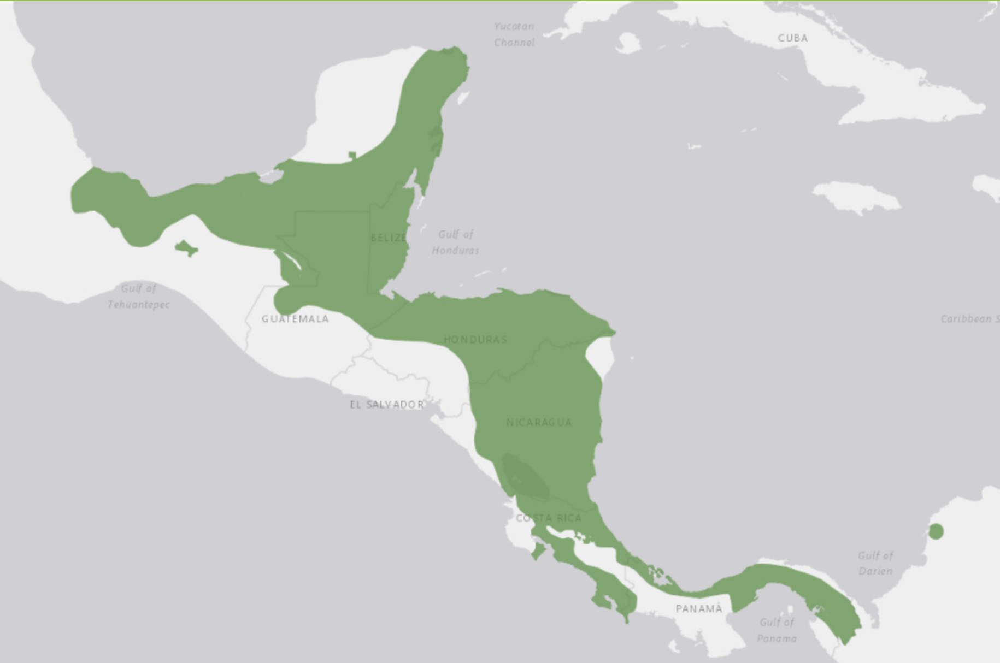

Red-Eyed Tree Frog
This is the area where Red-Eyed Tree Frogs are found!

Most commonly known as the Red-Eyed Tree Frog, the Red Eyed Tree Frog is most found around areas of Southern and Central Mexico.
The groups that Red Eyed Tree Frogs live in are called an Army. These frogs depend on their bright green to blend in with their background, if all fails, then they use their bright red eyes and limbs to startle the predator!
Fun fact! These frogs have legs that are actually meant for climbing rather than swimming, their toes are formed like suction cups to aid them.